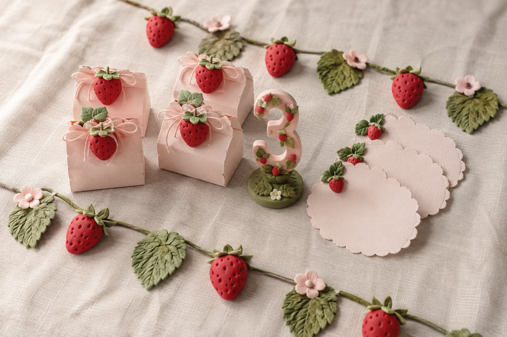
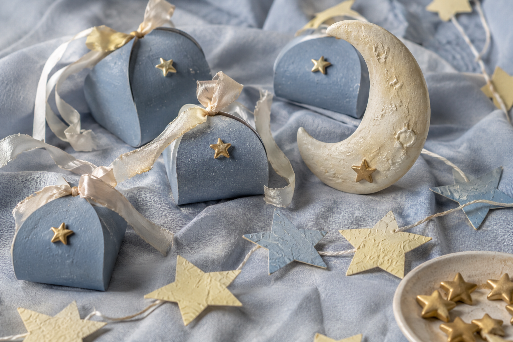

דמיינתי חגיגה שכולה תותים: קופסאות קטנות עם פרי מפוסל, עלים רכים ושרשרת שמחברת הכול יחד. בחרתי ורוד עדין וירוק של גינה, כדי לתת לאדום הקטן את כל הבמה.
דברים קטנים. שמחות גדולות.
Wonder
לכל שמחה יש סיפור.
שלי מתחיל בידיים.
גללו בעדינות. הסיפור נפתח.↓
פרק ראשון · חגיגה קטנהקצת תותים.
קצת תותים.
הרבה שמחה.
פרויקט דמיוני להמחשה

הקסם נמצא בפרטים
✧פרק שני · חלום בידייםעד הירח.
עד הירח.
ובחזרה אליכם.
פרויקט דמיוני להמחשה

משהו קטן לשמור
✧רציתי לתפוס את הרגע השקט שבו מבקשים משאלה. יצרתי ירח בהיר, פיזרתי כוכבים בצבע חמאה ועטפתי את הכול בתכלת. כל קופסה היא עולם קטן, וכל פרט ממשיך את אותו חלום.
הסיפור הבא יכול להיות שלכם
מה נחגוג
ביחד?
רעיון קטן, אירוע שמתקרב, או רק תחושה.
אשמח לשמוע וליצור משהו שהוא שלכם.
With love, Hila